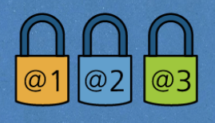

Взломав Ваш аккаунт, можно отправлять письма от Вашего имени, чтобы получить нужную информацию или испортить Вашу репутацию.
Через электронную почту можно отправлять вредоносные файлы от вашего имени.
Узнав логин и пароль, можно получить доступ ко всем зарегистрированным на Ваш аккаунт сервисам.
Не настраивайте доступ к рабочей почте на мобильных устройствах без острой необходимости. Это может привести к краже нужной и важной информации. Если необходимость все же возникла, обратитесь к сотруднику отдела IT для установки официальной программы - клиента электронной почты.
Не пересылайте информацию, содержащую рабочий характер на личный e-mail. В случае взлома злоумышленники смогут и украсть рабочую информацию тоже.
Никому не предоставляйте доступ к своему аккаунту в рабочей системе и личному почтовому ящику, даже коллегам и друзья.
Для регистрации на сторонних ресурсах используйте личную почту или воспользуйтесь одноразовым e-mail, который самоуничтожится через некоторое время.
Заведите несколько аккаунтов личной электронной почты для различных задач (переписки, интернет-заказов, регистрации на различных сайтах и т.д.)
Установите разные пароли на свои почтовые ящики. Не открывайте вложения и не переходите по ссылкам от неизвестных Вам отправителей.